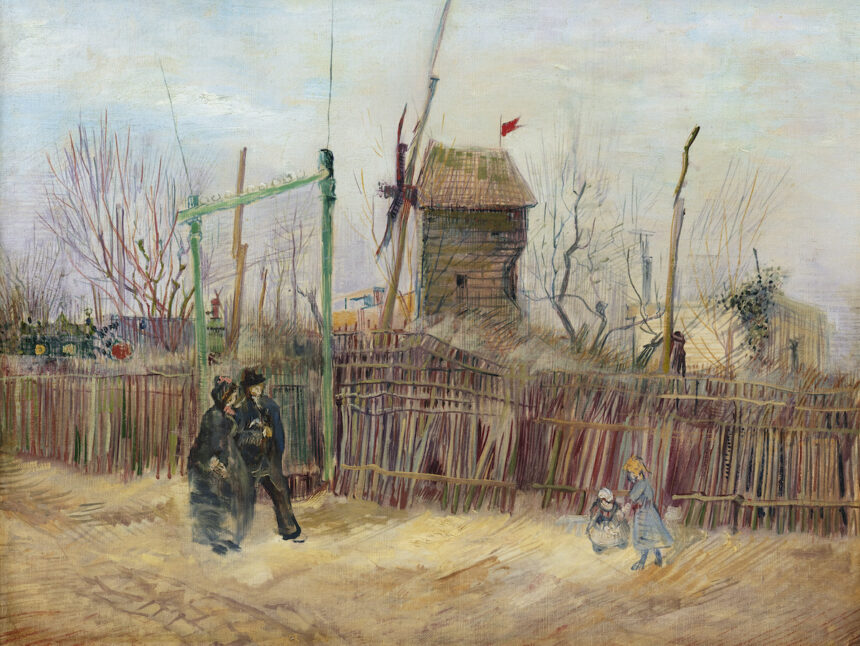

«Уличная сцена на Монмартре» — это картина Винсента Ван Гога, написанная в 1887 году, которая изображает ветряную мельницу на Монмартре во времена, когда этот район был еще деревней на окраине Парижа. Картина примечательна тем, что находится на переходе Ван Гога от темного «голландского» периода к яркому «прованскому», поскольку в этот парижский период он открыл для себя импрессионистов и начал экспериментировать с цветом. Почти век эта работа находилась в одной частной французской семье, но в 2021 году была продана на аукционе за рекордную для Франции сумму
Основная информация о картине
Название: «Уличная сцена на Монмартре»
Год создания: 1887
Место действия: Монмартр, Париж
Изображение: ветряная мельница, которая была частью пейзажа Монмартра того времени
Исторический контекст: в этот период вдали от картины только начиналось строительство собора Сакре-Кёр
Художественный период: картина демонстрирует переходный момент в творчестве Ван Гога, когда он переходил от темных тонов к более ярким и начал экспериментировать с цветом под влиянием импрессионистов
Судьба: более 100 лет находилась в одной частной французской семье и не выставлялась публично. В 2021 году была продана на аукционе за более чем €13 миллионов
Картина Винсента Ван Гога «Уличная сцена на Монмартре» («Scène de rue à Montmartre») — известное полотно, написанное художником в период его пребывания в Париже
Основные сведения о картине:
Название: «Уличная сцена на Монмартре» (встречается вариант «Уличная сцена на Монмартре, мельница в Пуавре», от фр. Le Moulin à Poivre)
Художник: Винсент Ван Гог (Vincent van Gogh)
Дата создания: Весна 1887 года
Материал и техника: Холст, масло
Размер: 46 х 61 см (существует также другая версия размером 34,5 х 64,5 см)
Описание и история:
На картине изображена улица на Монмартре с мельницей Пуавр (Le Moulin à Poivre) на заднем плане. Также видны деревья, забор и прохожие
Ван Гог жил со своим братом Тео в Париже с 1886 по 1888 год, и этот период был очень продуктивным для художника. Картина является частью редкой серии работ, изображающих Монмартр
Полотно более 100 лет находилось в частной коллекции одной французской семьи и не демонстрировалось широкой публике с момента его создания в 1887 году, пока не было выставлено на аукцион в 2021 году
Местонахождение и стоимость:
Долгое время картина хранилась в частной коллекции
В марте 2021 года картина была продана на аукционе Sotheby's за 16,2 млн евро (около 19,1 млн долларов США)
>Текущее местонахождение картины — частное собрание в Копенгагене
